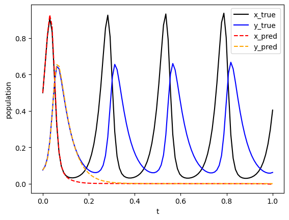

import deepxde as dde
import matplotlib.pyplot as plt
import numpy as np
from scipy import integrate
from deepxde.backend import tf
Using backend: tensorflow.compat.v1
2023-03-09 18:48:59.730105: I tensorflow/core/platform/cpu_feature_guard.cc:193] This TensorFlow binary is optimized with oneAPI Deep Neural Network Library (oneDNN) to use the following CPU instructions in performance-critical operations: AVX2 AVX512F AVX512_VNNI AVX512_BF16 FMA
To enable them in other operations, rebuild TensorFlow with the appropriate compiler flags.
2023-03-09 18:48:59.799068: I tensorflow/core/util/port.cc:104] oneDNN custom operations are on. You may see slightly different numerical results due to floating-point round-off errors from different computation orders. To turn them off, set the environment variable `TF_ENABLE_ONEDNN_OPTS=0`.
2023-03-09 18:49:00.117150: W tensorflow/compiler/xla/stream_executor/platform/default/dso_loader.cc:64] Could not load dynamic library 'libnvinfer.so.7'; dlerror: libnvinfer.so.7: cannot open shared object file: No such file or directory; LD_LIBRARY_PATH: :/home/alonsolml/mambaforge/envs/nc-book/lib/:/home/alonsolml/mambaforge/envs/nc-book/lib/
2023-03-09 18:49:00.118792: W tensorflow/compiler/xla/stream_executor/platform/default/dso_loader.cc:64] Could not load dynamic library 'libnvinfer_plugin.so.7'; dlerror: libnvinfer_plugin.so.7: cannot open shared object file: No such file or directory; LD_LIBRARY_PATH: :/home/alonsolml/mambaforge/envs/nc-book/lib/:/home/alonsolml/mambaforge/envs/nc-book/lib/
2023-03-09 18:49:00.118797: W tensorflow/compiler/tf2tensorrt/utils/py_utils.cc:38] TF-TRT Warning: Cannot dlopen some TensorRT libraries. If you would like to use Nvidia GPU with TensorRT, please make sure the missing libraries mentioned above are installed properly.
WARNING:tensorflow:From /home/alonsolml/mambaforge/envs/nc-book/lib/python3.10/site-packages/tensorflow/python/compat/v2_compat.py:107: disable_resource_variables (from tensorflow.python.ops.variable_scope) is deprecated and will be removed in a future version.
Instructions for updating:
non-resource variables are not supported in the long term
Enable just-in-time compilation with XLA.
2023-03-09 18:49:00.540528: I tensorflow/compiler/xla/stream_executor/cuda/cuda_gpu_executor.cc:967] could not open file to read NUMA node: /sys/bus/pci/devices/0000:01:00.0/numa_node
Your kernel may have been built without NUMA support.
2023-03-09 18:49:00.552517: I tensorflow/compiler/xla/stream_executor/cuda/cuda_gpu_executor.cc:967] could not open file to read NUMA node: /sys/bus/pci/devices/0000:01:00.0/numa_node
Your kernel may have been built without NUMA support.
2023-03-09 18:49:00.552549: I tensorflow/compiler/xla/stream_executor/cuda/cuda_gpu_executor.cc:967] could not open file to read NUMA node: /sys/bus/pci/devices/0000:01:00.0/numa_node
Your kernel may have been built without NUMA support.
WARNING:tensorflow:From /home/alonsolml/mambaforge/envs/nc-book/lib/python3.10/site-packages/deepxde/nn/initializers.py:118: The name tf.keras.initializers.he_normal is deprecated. Please use tf.compat.v1.keras.initializers.he_normal instead.
ub = 200
rb = 20
def func(t, r):
x, y = r
dx_t = 1 / ub * rb * (2.0 * ub * x - 0.04 * ub * x * ub * y)
dy_t = 1 / ub * rb * (0.02 * ub * x * ub * y - 1.06 * ub * y)
return dx_t, dy_t
def gen_truedata():
t = np.linspace(0, 1, 100)
sol = integrate.solve_ivp(func, (0, 10), (100 / ub, 15 / ub), t_eval=t)
x_true, y_true = sol.y
x_true = x_true.reshape(100, 1)
y_true = y_true.reshape(100, 1)
return x_true, y_true
def ode_system(x, y):
r = y[:, 0:1]
p = y[:, 1:2]
dr_t = dde.grad.jacobian(y, x, i=0)
dp_t = dde.grad.jacobian(y, x, i=1)
return [
dr_t - 1 / ub * rb * (2.0 * ub * r - 0.04 * ub * r * ub * p),
dp_t - 1 / ub * rb * (0.02 * r * ub * p * ub - 1.06 * p * ub),
]
geom = dde.geometry.TimeDomain(0.0, 1.0)
data = dde.data.PDE(geom, ode_system, [], 3000, 2, num_test=3000)
layer_size = [1] + [64] * 6 + [2]
activation = "tanh"
initializer = "Glorot normal"
net = dde.nn.FNN(layer_size, activation, initializer)
# Backend tensorflow.compat.v1 or tensorflow
def input_transform(t):
return tf.concat(
(
t,
tf.sin(t),
tf.sin(2 * t),
tf.sin(3 * t),
tf.sin(4 * t),
tf.sin(5 * t),
tf.sin(6 * t),
),
axis=1,
)
# hard constraints: x(0) = 100, y(0) = 15
# Backend tensorflow.compat.v1 or tensorflow
def output_transform(t, y):
y1 = y[:, 0:1]
y2 = y[:, 1:2]
return tf.concat([y1 * tf.tanh(t) + 100 / ub, y2 * tf.tanh(t) + 15 / ub], axis=1)
net.apply_feature_transform(input_transform)
net.apply_output_transform(output_transform)
model = dde.Model(data, net)
model.compile("adam", lr=0.001)
losshistory, train_state = model.train(iterations=50000)
model.compile("L-BFGS")
losshistory, train_state = model.train()
dde.saveplot(losshistory, train_state, issave=True, isplot=True)
Compiling model...
Building feed-forward neural network...
'build' took 0.038251 s
/home/alonsolml/mambaforge/envs/nc-book/lib/python3.10/site-packages/deepxde/nn/tensorflow_compat_v1/fnn.py:103: UserWarning: `tf.layers.dense` is deprecated and will be removed in a future version. Please use `tf.keras.layers.Dense` instead.
return tf.layers.dense(
2023-03-09 18:49:01.236494: I tensorflow/core/platform/cpu_feature_guard.cc:193] This TensorFlow binary is optimized with oneAPI Deep Neural Network Library (oneDNN) to use the following CPU instructions in performance-critical operations: AVX2 AVX512F AVX512_VNNI AVX512_BF16 FMA
To enable them in other operations, rebuild TensorFlow with the appropriate compiler flags.
2023-03-09 18:49:01.237355: I tensorflow/compiler/xla/stream_executor/cuda/cuda_gpu_executor.cc:967] could not open file to read NUMA node: /sys/bus/pci/devices/0000:01:00.0/numa_node
Your kernel may have been built without NUMA support.
2023-03-09 18:49:01.237400: I tensorflow/compiler/xla/stream_executor/cuda/cuda_gpu_executor.cc:967] could not open file to read NUMA node: /sys/bus/pci/devices/0000:01:00.0/numa_node
Your kernel may have been built without NUMA support.
2023-03-09 18:49:01.237426: I tensorflow/compiler/xla/stream_executor/cuda/cuda_gpu_executor.cc:967] could not open file to read NUMA node: /sys/bus/pci/devices/0000:01:00.0/numa_node
Your kernel may have been built without NUMA support.
2023-03-09 18:49:01.570876: I tensorflow/compiler/xla/stream_executor/cuda/cuda_gpu_executor.cc:967] could not open file to read NUMA node: /sys/bus/pci/devices/0000:01:00.0/numa_node
Your kernel may have been built without NUMA support.
2023-03-09 18:49:01.570942: I tensorflow/compiler/xla/stream_executor/cuda/cuda_gpu_executor.cc:967] could not open file to read NUMA node: /sys/bus/pci/devices/0000:01:00.0/numa_node
Your kernel may have been built without NUMA support.
2023-03-09 18:49:01.570948: I tensorflow/core/common_runtime/gpu/gpu_device.cc:1700] Could not identify NUMA node of platform GPU id 0, defaulting to 0. Your kernel may not have been built with NUMA support.
2023-03-09 18:49:01.570969: I tensorflow/compiler/xla/stream_executor/cuda/cuda_gpu_executor.cc:967] could not open file to read NUMA node: /sys/bus/pci/devices/0000:01:00.0/numa_node
Your kernel may have been built without NUMA support.
2023-03-09 18:49:01.570977: W tensorflow/core/common_runtime/gpu/gpu_bfc_allocator.cc:42] Overriding orig_value setting because the TF_FORCE_GPU_ALLOW_GROWTH environment variable is set. Original config value was 0.
2023-03-09 18:49:01.570996: I tensorflow/core/common_runtime/gpu/gpu_device.cc:1613] Created device /job:localhost/replica:0/task:0/device:GPU:0 with 7369 MB memory: -> device: 0, name: NVIDIA GeForce RTX 3080, pci bus id: 0000:01:00.0, compute capability: 8.6
'compile' took 0.791745 s
Initializing variables...
Training model...
2023-03-09 18:49:02.003823: I tensorflow/compiler/mlir/mlir_graph_optimization_pass.cc:357] MLIR V1 optimization pass is not enabled
2023-03-09 18:49:02.085005: I tensorflow/compiler/xla/service/service.cc:173] XLA service 0x7fdf2800ac80 initialized for platform CUDA (this does not guarantee that XLA will be used). Devices:
2023-03-09 18:49:02.085038: I tensorflow/compiler/xla/service/service.cc:181] StreamExecutor device (0): NVIDIA GeForce RTX 3080, Compute Capability 8.6
2023-03-09 18:49:02.092669: I tensorflow/compiler/mlir/tensorflow/utils/dump_mlir_util.cc:268] disabling MLIR crash reproducer, set env var `MLIR_CRASH_REPRODUCER_DIRECTORY` to enable.
2023-03-09 18:49:02.721700: I tensorflow/tsl/platform/default/subprocess.cc:304] Start cannot spawn child process: Permission denied
2023-03-09 18:49:03.135310: I tensorflow/compiler/xla/stream_executor/gpu/asm_compiler.cc:325] ptxas warning : Registers are spilled to local memory in function 'fusion_2', 424 bytes spill stores, 524 bytes spill loads
2023-03-09 18:49:03.138279: I tensorflow/compiler/jit/xla_compilation_cache.cc:477] Compiled cluster using XLA! This line is logged at most once for the lifetime of the process.
2023-03-09 18:49:03.642955: I tensorflow/compiler/xla/stream_executor/cuda/cuda_blas.cc:630] TensorFloat-32 will be used for the matrix multiplication. This will only be logged once.
Step Train loss Test loss Test metric
0 [7.98e+01, 4.82e+01] [7.97e+01, 4.82e+01] []
2023-03-09 18:49:04.773045: I tensorflow/compiler/xla/stream_executor/gpu/asm_compiler.cc:325] ptxas warning : Registers are spilled to local memory in function 'fusion_2', 424 bytes spill stores, 524 bytes spill loads
1000 [3.88e+00, 3.68e-01] [3.74e+00, 3.65e-01] []
2000 [2.81e+00, 5.31e-01] [2.68e+00, 5.21e-01] []
3000 [2.21e+00, 6.58e-01] [2.09e+00, 6.43e-01] []
4000 [1.77e+00, 7.40e-01] [1.66e+00, 7.21e-01] []
5000 [1.30e+00, 7.30e-01] [1.22e+00, 7.07e-01] []
6000 [8.40e-01, 5.05e-01] [7.90e-01, 4.88e-01] []
7000 [5.76e-01, 3.23e-01] [5.51e-01, 3.12e-01] []
8000 [2.40e-01, 2.13e-01] [2.29e-01, 2.06e-01] []
9000 [1.37e-01, 1.56e-01] [1.32e-01, 1.52e-01] []
10000 [8.38e-02, 1.14e-01] [8.25e-02, 1.11e-01] []
11000 [7.42e-02, 9.99e-02] [7.39e-02, 9.73e-02] []
12000 [5.05e-02, 9.38e-02] [5.05e-02, 9.17e-02] []
13000 [6.70e-02, 9.63e-02] [6.70e-02, 9.48e-02] []
14000 [3.94e-02, 6.31e-02] [3.93e-02, 6.22e-02] []
15000 [3.99e-02, 5.64e-02] [4.00e-02, 5.60e-02] []
16000 [5.95e-02, 6.49e-02] [5.96e-02, 6.47e-02] []
17000 [3.12e-02, 6.21e-02] [3.12e-02, 6.20e-02] []
18000 [1.66e-01, 1.45e-01] [1.66e-01, 1.40e-01] []
19000 [2.67e-02, 1.37e-02] [2.65e-02, 1.27e-02] []
20000 [2.37e-02, 5.39e-03] [2.37e-02, 5.21e-03] []
21000 [2.15e-02, 2.95e-03] [2.15e-02, 2.86e-03] []
22000 [1.98e-02, 1.50e-03] [1.98e-02, 1.46e-03] []
23000 [1.86e-02, 1.23e-03] [1.85e-02, 1.22e-03] []
24000 [1.81e-02, 8.50e-04] [1.80e-02, 8.50e-04] []
25000 [1.81e-02, 7.82e-04] [1.80e-02, 7.87e-04] []
26000 [1.80e-02, 6.57e-04] [1.79e-02, 6.56e-04] []
27000 [1.58e-02, 2.59e-03] [1.57e-02, 2.57e-03] []
28000 [2.10e-02, 1.09e-03] [2.10e-02, 1.09e-03] []
29000 [1.69e-02, 1.35e-03] [1.69e-02, 1.34e-03] []
30000 [1.66e-02, 2.64e-03] [1.66e-02, 2.62e-03] []
31000 [1.85e-02, 3.18e-03] [1.85e-02, 3.14e-03] []
32000 [1.51e-02, 1.70e-03] [1.50e-02, 1.67e-03] []
33000 [1.63e-02, 3.51e-03] [1.62e-02, 3.47e-03] []
34000 [1.76e-02, 3.26e-03] [1.76e-02, 3.23e-03] []
35000 [1.55e-02, 9.32e-04] [1.54e-02, 9.17e-04] []
36000 [1.51e-02, 1.39e-03] [1.51e-02, 1.35e-03] []
37000 [2.18e-02, 1.38e-03] [2.18e-02, 1.35e-03] []
38000 [1.71e-02, 1.48e-03] [1.71e-02, 1.44e-03] []
39000 [1.68e-02, 1.36e-03] [1.68e-02, 1.33e-03] []
40000 [1.62e-02, 2.08e-03] [1.62e-02, 2.05e-03] []
41000 [1.53e-02, 1.57e-03] [1.52e-02, 1.54e-03] []
42000 [1.96e-02, 1.60e-03] [1.95e-02, 1.58e-03] []
43000 [2.22e-02, 1.60e-03] [2.22e-02, 1.57e-03] []
44000 [2.49e-02, 1.64e-03] [2.49e-02, 1.60e-03] []
45000 [1.51e-02, 1.38e-03] [1.51e-02, 1.35e-03] []
46000 [1.54e-02, 1.76e-03] [1.54e-02, 1.73e-03] []
47000 [1.48e-02, 1.50e-03] [1.48e-02, 1.47e-03] []
48000 [1.51e-02, 1.10e-03] [1.51e-02, 1.06e-03] []
49000 [1.80e-02, 2.92e-03] [1.80e-02, 2.89e-03] []
50000 [1.73e-02, 1.30e-03] [1.73e-02, 1.27e-03] []
Best model at step 48000:
train loss: 1.62e-02
test loss: 1.62e-02
test metric: []
'train' took 85.357497 s
Compiling model...
'compile' took 0.244799 s
Training model...
2023-03-09 18:50:27.656155: W tensorflow/compiler/jit/mark_for_compilation_pass.cc:1780] (One-time warning): Not using XLA:CPU for cluster.
If you want XLA:CPU, do one of the following:
- set the TF_XLA_FLAGS to include "--tf_xla_cpu_global_jit", or
- set cpu_global_jit to true on this session's OptimizerOptions, or
- use experimental_jit_scope, or
- use tf.function(jit_compile=True).
To confirm that XLA is active, pass --vmodule=xla_compilation_cache=1 (as a
proper command-line flag, not via TF_XLA_FLAGS).
Step Train loss Test loss Test metric
50000 [1.73e-02, 1.30e-03] [1.73e-02, 1.27e-03] []
INFO:tensorflow:Optimization terminated with:
Message: CONVERGENCE: REL_REDUCTION_OF_F_<=_FACTR*EPSMCH
Objective function value: 0.016296
Number of iterations: 4
Number of functions evaluations: 27
50027 [1.51e-02, 1.18e-03] [1.51e-02, 1.15e-03] []
Best model at step 48000:
train loss: 1.62e-02
test loss: 1.62e-02
test metric: []
'train' took 2.610122 s
Saving loss history to /mnt/d/Documents/git/teaching-ml-diffeq/loss.dat ...
Saving training data to /mnt/d/Documents/git/teaching-ml-diffeq/train.dat ...
Saving test data to /mnt/d/Documents/git/teaching-ml-diffeq/test.dat ...
plt.xlabel("t")
plt.ylabel("population")
t = np.linspace(0, 1, 100)
x_true, y_true = gen_truedata()
plt.plot(t, x_true, color="black", label="x_true")
plt.plot(t, y_true, color="blue", label="y_true")
t = t.reshape(100, 1)
sol_pred = model.predict(t)
x_pred = sol_pred[:, 0:1]
y_pred = sol_pred[:, 1:2]
plt.plot(t, x_pred, color="red", linestyle="dashed", label="x_pred")
plt.plot(t, y_pred, color="orange", linestyle="dashed", label="y_pred")
plt.legend()
plt.show()
